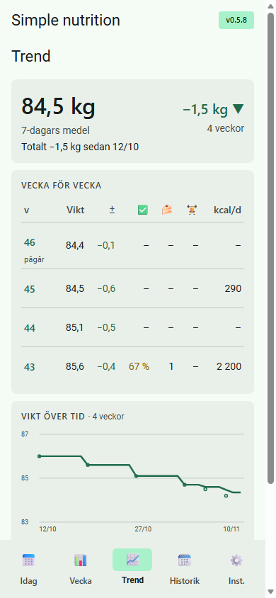

Simple nutrition
Vanor först – kalorier som stöd när du vill. Utan konto, utan reklam, utan ramverk.
Simple nutrition
#2f7d5bVanor först – kalorier som stöd när du vill.
- Ett tryck per måltid: Följde · Fusk · Hoppade över
- Kalorier och makron ur Livsmedelsverkets data
- Egna rätter per portion eller hel sats
- Snabbval när du inte vet exakt – eller din egen uppskattning
- Vikt, träning, vecka och trend över tid
- Krypterad backup, offline, ljust och mörkt tema



Idag · Vecka · Trend – påhittad exempeldata
Egen matdatabas – utan betal-API
- Livsmedelsverkets öppna databas hämtades en gång – 2 606 livsmedel med analyserade värden
- 91 vanliga kärnvaror med 195 butiksvarianter, t.ex. nötfärs 5 / 12 / 20 % fett
- Saknas en variant räknas den fram ur fetthalten – och märks ”beräknad”
- Egna mått: ”1 dl”, ”1 st”, avrunna burkvikter – så du slipper väga allt
- Över 100 rätter räknas om automatiskt vid varje release – mot Livsmedelsverkets rätter och allmänna standardvärden
Fyra nivåer – välj efter läget
- Snabbval – ett tryck. Hemmagjort ≈ 450 / 650 / 850 kcal, utemat ≈ 700 / 1 000 / 1 400. Bättre än att inte logga alls.
- Schabloner – vanliga varor och rätter med ungefärliga mått: ”1 st”, ”1 dl”, ”1 burk avr.”. Ingen våg behövs.
- Skanna med AI – fotografera tallriken eller förpackningen och be AI:n i telefonen, t.ex. Gemini eller Apple Intelligence, om kcal och makron. Skriv in som egen uppskattning.
- Laga själv – väg ingredienserna i en egen rätt. Det exaktaste som finns, och lättare än det låter.
AI-tips: be om protein, kolhydrater och fett också, och nämn portionsstorleken. Studier visar att AI känner igen maten bra men ofta underskattar mängden – se det som ett ungefär. Näringstabellen på en förpackning kan AI:n däremot läsa av rakt av.
En gryta – fem matlådor
Hemlagat är både billigast och lättast att räkna rätt: du vet exakt vad som åkte ner i grytan.
Rätten sparas och återanvänds nästa gång. Ändrar du receptet påverkas inte dagar som redan är loggade.
Att logga slår att logga exakt
- Ofta och jämnt vinnerde som gick ner mest loggade inte längre – de loggade oftare och mer regelbundet. Tiden sjönk från 23 till 15 minuter om dagen. (Harvey m.fl., Obesity 2019)
- Självövervakning fungerar22 studier visar genomgående samband mellan att följa sin mat och viktnedgång. (Burke m.fl., J Am Diet Assoc 2011)
- En app räcker inte ensampatienter som fick en stor kaloriapp gick inte ner mer än andra – de flesta slutade använda den inom ett halvår. (Laing m.fl., Annals of Internal Medicine 2014)
- Det som glöms bort är största feletanvändare missar i snitt var femte sak de äter, oftast det energitäta. Databasen spelar mindre roll.
- Förenklat kan räckaen liten pilotstudie fick lika stor viktnedgång med att bara bocka av vissa livsmedel som med full loggning. Lovande, inte bevisat. (Patel m.fl., JMIR 2022)
Ingen studie har jämfört just den här appen. Men den är byggd på det forskningen säger spelar roll: enkelt nog att orka varje dag.
Så får du bäst förutsättningar
- Logga varje dag – hellre ett snabbval än inget. Det är regelbundenheten som räknas.
- Logga direkt – efter måltiden, inte på kvällen. Då glöms mindre bort.
- Glöm inte småsakerna – dryck, sås, smör och godis är det som oftast faller bort.
- Laga i satser – en vägd gryta i matlådor ger exakta värden hela veckan med ett tryck per lunch.
- Följ trenden, inte dagen – väg dig några gånger i veckan och titta på Trend. En enskild dag säger lite.
- Börja enkelt – vanor först, kalorier när du vill veta mer. Det du orkar med länge slår det perfekta.
Inget lämnar telefonen
Bara i telefonen
Ingen server, inget konto. Webbläsaren stoppar alla anrop ut – även om koden skulle försöka.
Låst backup
Ett tryck sparar en backup-fil, låst med ditt lösenord. Krypteringen är samma som banker och lösenordshanterare använder. Låt appen välja lösenordet, så går den inte att knäcka.
Spara lösenordet
Det finns aldrig i filen. Utan det öppnas backupen inte – inte ens av utvecklaren.
Spara som app på hemskärmen
Ingen app-butik behövs. En genväg på hemskärmen startar appen i eget fönster utan adressfält – den ser ut och fungerar som en vanlig app, även utan nät.
Android
Öppna i Chrome, Brave eller Samsung Internet. Tryck på ⋮ och välj Installera app eller Lägg till på startskärmen.
iPhone och iPad
Öppna i Safari. Tryck på Dela (fyrkanten med pil uppåt), välj Lägg till på hemskärmen och sedan Lägg till.
Adress: flyinggooner.github.io/simple-nutrition
Öppnade du länken i Messenger eller en annan app? Välj först Öppna i webbläsare – annars går det inte att installera.
Enkelt för användaren.
Genomtänkt bakom kulisserna.
Rena råvaror, dina vanor och din data – bara i din telefon.